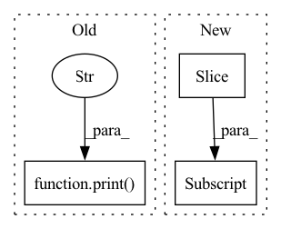

Pattern ID :14152

Before Change
// Iterate over all the vertebras
print(d[key].shape)
else:
print("This transform only applies to the pred")
return d
// For the second stage - Vertebra localization
After Change
for key in self.key_iterator(d):
final_pred = np.zeros(d["original_size"], dtype=np.float32)
if key == "pred":
final_pred[
d["slices_cropped"][-3][0] : d["slices_cropped"][-3][1],
d["slices_cropped"][-2][0] : d["slices_cropped"][-2][1],
d["slices_cropped"][-1][0] : d["slices_cropped"][-1][1],
] = d["pred"]
d["pred"] = final_pred * int(d["current_label"])
// How to get the ROI to reconstruct final image? - Iterate over all the vertebras
return d
In pattern: SUPERPATTERN
Frequency: 3
Non-data size: 3
Instances
Fragment ID: 47209817
Project Name: project-monai/monailabel
Commit Name: 9228c2170e1d59ff6f8c45909390be3e1f1cd314
Time: 2022-08-04
Author: diazandr3s@gmail.com
File Name: sample-apps/radiology/lib/transforms/transforms.py
M Class Name: PlaceCroppedAread
N Class Name: PlaceCroppedAread
M Method Name: __call__(2)
N Method Name: __call__(2)
M Parent Class: MapTransform
N Parent Class: MapTransform
M File Name: sample-apps/radiology/lib/transforms/transforms.py
N File Name: sample-apps/radiology/lib/transforms/transforms.py
M Start Line: 225
M End Line: 233
N Start Line: 226
N End Line: 235
'>
Before Change
optim.zero_grad()
def run_G(self, z, c, sync):
print("------------------ run_G -------------------")
ws = self.mapping(z, c)
self.style_mixing_prob = -1.0
if self.style_mixing_prob > 0:
// cutoff = torch.empty([], dtype=torch.int64, device=ws.device).random_(1, ws.shape[1])
After Change
if self.style_mixing_prob > 0:
cutoff = torch.empty([], dtype=torch.int64, device=ws.device).random_(1, ws.shape[1])
cutoff = torch.where(torch.rand([], device=ws.device) < self.style_mixing_prob, cutoff, torch.full_like(cutoff, ws.shape[1]))
ws[:, cutoff:] = self.mapping(torch.randn_like(z), c, skip_w_avg_update=True)[:, cutoff:]
img = self.synthesis(ws)
return img, ws
'>
Fragment ID: 47209819
Project Name: miemie2013/miemiegan
Commit Name: 0ad2483396ab17c9512db493c01be594f47431b0
Time: 2022-02-23
Author: 53960695+miemie2013@users.noreply.github.com
File Name: mmgan/models/architectures/styleganv2ada_model.py
M Class Name: StyleGANv2ADAModel
N Class Name: StyleGANv2ADAModel
M Method Name: run_G(4)
N Method Name: run_G(4)
M Parent Class: torch.nn.Module
N Parent Class: torch.nn.Module
M File Name: mmgan/models/architectures/styleganv2ada_model.py
N File Name: mmgan/models/architectures/styleganv2ada_model.py
M Start Line: 127
M End Line: 147
N Start Line: 128
N End Line: 133
'>
Before Change
all_embeddings.append(embedding)
if index % 1000 == 0:
print(f"Embedded {index} with {num_errors} errors")
final_embeddings = np.array(all_embeddings)
retrieved_indices = np.array(all_ids)
After Change
if start_ix == end_ix:
continue
sentences_text = sentences.iloc[start_ix: end_ix]["text"].to_list()
sentences_id = sentences.iloc[start_ix: end_ix]["sentence_id"].to_list()
try:
'>
Fragment ID: 47209820
Project Name: bluebrain/search
Commit Name: 6eb30c8b3e77791ee4e407dd19d7a5e08fe5e132
Time: 2020-09-04
Author: jankrepl@yahoo.com
File Name: src/bbsearch/embedding_models.py
M Class Name: AnonimousClass
N Class Name: AnonimousClass
M Method Name: compute_database_embeddings(4)
N Method Name: compute_database_embeddings(3)
M Parent Class:
N Parent Class:
M File Name: src/bbsearch/embedding_models.py
N File Name: src/bbsearch/embedding_models.py
M Start Line: 287
M End Line: 309
N Start Line: 433
N End Line: 494